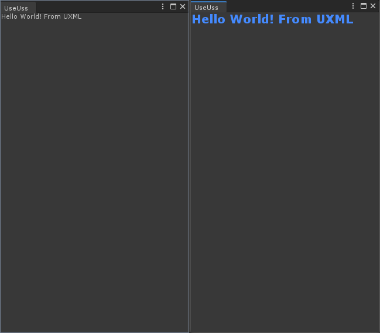

USS的语法以及使用规则同CSS大同小异，熟悉CSS的开发者可以迅速上手编写
一、将USS附加到VisualElement

USS主要作用就是附加到视觉元素上，从而达到美化界面的效果，如上图所示。使用下面的代码，可以将USS附加给某个VisualElement，生效的范围是该VisualElement以及它的所有子节点。
1 | // The style will be applied to the VisualElement and all of its children. |
二、USS的选择器
CSS的语法和原理基于选择器，USS同理，并且USS的选择器语法和CSS几乎一致。
选择器将根据规则匹配作用范围内的所有标签，对应的标签会添加上USS定义的样式。
接下来我们枚举出所有的USS选择器，假设我们UXML如下：
1 | <engine:Label class="classA" name="One"/> |
1. 类型选择器
1 | TypeName { ... } |
TypeName指定C#定义好的类型，比如Label、Button等内置的类型或者我们自己扩展的类型，注意不能使用命名空间（类名重复问题不应该放在USS层面解决，要在C#层面或者UXML层面解决好）
2. 名称选择器
1 | #name { ... } |
名称选择器会匹配指定name属性值的标签
3. 类名选择器
1 | .class { ... } |
类名选择器会匹配指定class属性值的标签，上面的例子中会匹配到Two和Three
4. 通配符
1 | * { ... } |
USS也支持通配符，上面这样声明则是匹配所有标签
5. 伪状态
1 | :pseudo-state { ... } |
伪状态在某些状态下触发，触发时会被USS匹配并加入样式，以下是USS支持的伪状态以及它们的触发时机：
- hover：光标悬停在视觉元素上。
- active：正在与视觉元素交互。
- inactive：不再与视觉元素交互。
- focus：视觉元素具有焦点。
- disabled：视觉元素设置为 enabled == false。
- enabled：视觉元素设置为 enabled == true。
- checked：视觉元素是一个 Toggle 元素并已选中。
- root：树中的最高层级视觉元素时触发。
6. 复杂选择器
选择器之间可以互相组合，形成复杂的选择器，例如：
1 | Label#Two.ClassA:hover { ... } |
该选择器将在name为Two，class为ClassA的Label被光标悬停时应用样式
7. 选择器优先级
优先级从高到低：
- C#中直接设置的样式
- 通配符*
- 类型选择器（Type）
- 类名选择器（Class）
- 名称选择器（Name）
三、USS属性
直接观看文档：https://docs.unity3d.com/cn/2019.4/Manual/UIE-USS-SupportedProperties.html
四、BEM
BEM是一种规范化类名选择器的语法规则，一般web前端开发大多都遵循它来使系统更加明朗。
举例：
1 | <VisualElement class="menu"> |
对于选择器来说，语法规则不变： 1
2
3
4
5
6
7
8.menu {
}
.menu__item {
}
.menu__item--disabled {
}